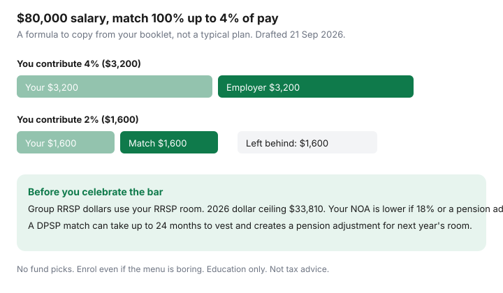

Personal Finance · Canada
How to Capture Every Dollar of Employer RRSP Match in Canada
The most reliable “return” in a Canadian workplace plan is the match you did not bother to turn on. A formula that deposits one employer dollar per employee dollar, up to a slice of salary, pays that slice whether or not you have opinions about the fund menu. People leave it behind by enrolling late, by contributing 2% when the ceiling is 4%, or by waiting for a perfect investment choice inside a plan that only needed a payroll election. This page is the capture checklist. It is not a stock pick and not a reason to ignore RRSP room.
Disclosure: Education only. Not tax, pension, or investment advice. No brokerage partnership is claimed. Group plans and self-directed RRSP transfers are described so you can read your booklet, not so you can buy a product from us.
Key takeaways
- Write the formula in one sentence: percent of your contribution, or percent of salary, and the dollar cap if there is one.
- On a labelled $80,000 salary with a 100% match up to 4% of pay, contributing 2% instead of 4% leaves $1,600 of employer money uncaptured.
- Mid-year enrolment often does not true-up the months you missed. Ask before you assume.
- A group RRSP generally uses this year’s RRSP room. A DPSP creates a pension adjustment for next year’s room and must vest within 24 months.
- Enrol on the boring investment option if that is what captures the match. Transfer later. Do not wait for a favourite fund.
Read the match formula: percent of contributions vs percent of salary
Three shapes show up constantly. They are examples of wording, not a survey of Canadian employers:
- 100% up to 4% of salary. You contribute 4%, they contribute 4%. You contribute 2%, they contribute 2%. The gap is the point.
- 50% of what you contribute, up to 3% of salary. You may need to contribute 6% to receive the full 3% from them.
- A dollar cap (“up to $2,000 a year”) that binds before the percent does, usually at higher pay.
Labelled arithmetic, $80,000 salary, first formula only: 4% is $3,200 from you and $3,200 from the employer. At 2%, both sides are $1,600 and $1,600 of match never exists. That $1,600 is the decision. The MER on the default fund is a later conversation.

| Your election | You contribute | Employer adds | Match left behind |
|---|---|---|---|
| 4% of $80,000 | $3,200 | $3,200 | $0 |
| 2% of $80,000 | $1,600 | $1,600 | $1,600 |
Payroll timing: when opting in mid-year still catches the match
Ask HR one question and keep the answer: “If I enrol in July, do you true-up January through June?” If the answer is no, the match only exists on contributions that actually run through payroll for the rest of the year. You can sometimes raise the percent on the remaining pays so the dollars for the year still hit the ceiling. That higher percent has to fit the take-home pay (payday automation) and your RRSP room. A true-up that exists only in a colleague’s memory does not exist. Get it from the booklet or from HR in writing.
Vesting and leaving-job rules that affect free money
CRA draws a bright line. A group RRSP contribution your employer makes is your RRSP contribution for room purposes. Whether it is a taxable benefit, and whether tax is withheld, depends on plan rules — including whether you can withdraw before you leave or retire. CRA’s payroll chart says employer RRSP contributions are not a taxable benefit in some locked designs and are a cash benefit if you can withdraw (Home Buyers’ Plan and Lifelong Learning Plan withdrawals aside). Your T4 and the RRSP receipt have to match. Do not guess the withholding from a blog.
A DPSP is employer money only. Contributions and reallocated forfeitures become a pension adjustment on the T4 (box 52), which reduces next year’s RRSP room. CRA requires DPSP amounts to vest after at most 24 months of membership, sooner if the plan says so. Leave early and unvested amounts are forfeited; a pension adjustment reversal (T10) restores the room that the pension adjustment had removed. Immediate vesting means there is nothing to reverse because you keep the contributions. “The match” in a workplace email might be either vehicle. The booklet’s cover page is the answer.
Room anchor: the 2026 RRSP dollar limit is $33,810. Your deduction limit is on the notice of assessment in CRA My Account. A match that overshoots that limit is not a gift. The $2,000 lifetime RRSP over-contribution buffer is a narrow cushion, then the tax is 1% per month. Coordinate with personal RRSP timing so payroll and your own PAD are not both trying to use the same room in March.
Group RRSP fees vs transferring to a self-directed RRSP later
Group menus are often short, and the cost is in the fund facts and any admin fee the booklet discloses. Read those numbers. They are not a reason to skip enrolment. After you leave, or when the plan allows an in-service transfer, move the money with a direct transfer to a self-directed RRSP so it stays registered. A cash withdrawal is taxable and can have withholding. This page will not name a fund to buy on the other side. Fee awareness is “read the booklet and compare the admin cost,” not a portfolio.
Coordinate the match with FHSA and TFSA automation so cash flow still works
Order for a household that has all three available: the employee percent that captures the full match, then a one-month bill float so the payroll deduction does not NSF, then TFSA and FHSA skims up to room. High-interest revolving debt still comes before extra TFSA contributions (rate-gap order). If the match percent itself causes a missed card minimum, lower the other skims before you decline the match. An FHSA is for eligible first-time buyers and does not replace the match; automate it only after the account is open (FHSA contributions).
Common mistakes: waiting for perfect investments inside the plan
- Leaving the election at 0% during probation because you might not stay. Ask about vesting. A group RRSP you can keep is still worth the months you are there. A DPSP you will forfeit in month three might not be.
- Contributing 1% “to try the plan” for three years. That is a three-year discount on the formula.
- Cashing the plan out when you change jobs, paying tax, then contributing to a new TFSA and calling it a transfer. A direct RRSP-to-RRSP transfer is the transfer.
- Ignoring the T4. If the employer amount and the RRSP slip disagree, fix it before you file, using the folder in the filing-cost guide.
Sources & date stamps
- CRA, contributions to savings and pension plans (payroll chart) — when an employer RRSP contribution is a taxable benefit, and withholding if the employee can deduct it (used 21 Sep 2026).
- CRA, DPSP contributions — vesting within 24 months; employee contributions not permitted; pension credit reduces next year’s RRSP room (used 21 Sep 2026).
- CRA, pension adjustment and pension adjustment reversal for DPSPs — T4 box 52 and the T10 when unvested amounts are forfeited (used 21 Sep 2026).
- CRA registered-plan limits — 2026 RRSP dollar limit $33,810 as a ceiling; personal room is the NOA.
Frequently asked questions
What if I join the plan in July?
Ask, in writing, whether the plan true-up matches contributions you missed earlier in the year. Many plans match only what you contribute through payroll after you enrol. If there is no true-up, raise the percent on the remaining pays so you still hit the annual match ceiling, and check that the higher percent fits your RRSP room.
Do employer deposits use my RRSP room?
Group RRSP contributions generally use your RRSP deduction limit in the year. The 2026 dollar ceiling is $33,810. Your personal limit is on the notice of assessment: 18% of prior earned income if that is lower, minus a pension adjustment, plus unused room. A DPSP employer contribution is different: it creates a pension adjustment that reduces next year's RRSP room.
What happens to the match if I quit?
Group RRSP money in your name is usually yours. A DPSP can take up to 24 months of membership to vest. Leave before that and you can forfeit unvested employer amounts. CRA then provides a pension adjustment reversal so the room comes back. Read your booklet before you give notice and assume the match is already yours.
Should I wait until I like the investment options?
No. An unused match is the expensive choice. A cash or savings option inside the plan still captures the formula. You can transfer to a self-directed RRSP later with a direct transfer. Withdrawing cash triggers tax. This page does not pick funds.
How does this sit with TFSA and FHSA automation?
Fund the employee percent that captures the full match first, if that payroll line will not cause an NSF or a missed debt minimum. Then the payday skim for the emergency HISA, TFSA, and FHSA. High-interest card balances still outrank extra TFSA contributions.